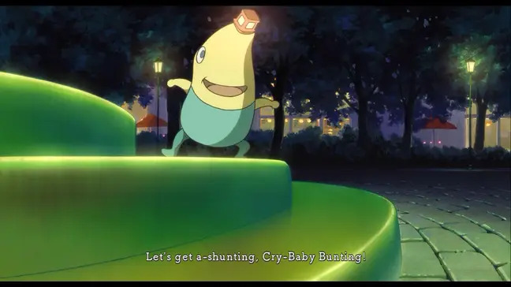

The Xeno games have been going on for over 2 decades now. Sadly, I never played Xenogears or Xenosaga even though I'm sure I would have enjoyed them as a kid. My first introduction to the series was with Xenoblade Chronicles. I didn't play the original Wii version though, I didn't know about the series until the re-release on 3DS (great machine btw). I was one of the 10 people in the world with a Wii U, so I also played Xenoblade Chronicles X. I remember it being polarizing at the time but people seem to look back at it fondly now. I played Xenoblade 2 and now I'm playing 3. Xenoblade Chronicles 3 may just be my favorite of the series so far. On this page I'm going to talk a little bit about each game and the series as a whole.
Credit to HexenVexen on Reddit for this image
What sets xenoblade apart?
Story
One of the overarching themes of Xenoblade is overcoming fate and destiny. In Xenoblade 1, Shulk starts as a relatively powerless nobody. However, he gains the power of the Monado (Is this the power of the Monado!?) as well as the power of future sight. With this, he repeatedly must witness the deaths of his friends, but he's able to change their fates and save them.
Now, I'm a huge fan of anything related to time travel, and even though he's not really time traveling, the plot device of seeing your friend die and then doing everything you can to save them always lands for me. (Shout-out to excellent visual novel Stein's Gate for also doing this well).
Voice Acting
Xenoblade has always had unique voice acting, showcasing actors from various regions including the British Isles as well as Australia. It's fun to hear a mix of American, British, Welsh, Scottish, and Australian accents. Dubs can be contentious, and sometimes things come across a little weird, due to the attempt to match the lip flaps to an English localization while maintaining story cohesion. That can be a delicate balancing act. Voice acting isn't easy so I try to appreciate the effort that goes into it.
During my research for this post, I came across an excellent article dissecting the various dialects of Xenoblade, Check it out here!
And a special shout-out to the first time I ever heard a Welsh accent, Mr. Drippy from Ni No Kuni:

Gameplay
The Xenoblade games are open world, and do have some of the trappings that all open world games have. Some of the systems feel a bit bloated, like the item collection. The games shine with their combat - real-time, MMO style combat. The games lean heavily into the trinity of tank/healer/damage classes. If you've played Final Fantasy XIV, the combat here will feel really similar.
It's been a long time since I've played the first game. I'm watching the cutscenes again to refresh myself on the story for now. Great game though, pick up the remastered Switch edition for a good time.
Xenoblade Chronicles X
Xenoblade X had an INCREDIBLE soundtrack, it's easily the best part of the game. The composer was Hiroyuki Sawano who did the music for...Attack on Titan! So you know the music in X is gonna be epic. It was really experimental. Kinda rap-rock at times, but overall it was vocal-heavy which I always like in an RPG. It was reminiscent of Persona in that aspect. The Xenoblade series is known for having giant monsters roaming the world that you can optionally fight. In X, they were called tyrants, and this is the theme that played whenever you fought one:
Try and tell me this song isn't amazing. You can't.
The rap-rock is on display in Black Tar, the regular battle theme. I think there were a couple valid issues people had. The regular fights ended far too quickly in X, and the sound mixing wasn't always the best. This led to people hearing the first 50 seconds of the song over and over again, which consisted of a guitar riff and often too-loud drums. That's the danger of a battle theme with vocals. When your fights end very fast, having a 6 minute battle song that starts over for every fight just doesn't work. It's too bad because I really like the song.
The different areas of the map also had unique soundtracks. Each had a specific theme and feel. For example, the jungle area had the jungle-iest song ever:
There's plenty more to say about X, it had a lot of good ideas but sometimes bad execution. Play it for the soundtrack, if anything.
Xenoblade Chronicles 2
Leaned too far into the anime shonen tropes. Too much fan-service, yelling the attack name every time you use a skill, and Rex is just not that great of a protagonist. Morag and Nia are great, though.
lol
Look, underneath all of the (admittedly glaring) issues, there's still fun to be had with Xenoblade 2. I didn't play the DLC but I heard the Torna expansion was a great experience.
Xenoblade Chronicles 3
Xenoblade 3 fixed a lot of the issues I had with the earlier games. Xenoblade games struggle with pacing. One of the memes is that you still get new tutorials 80 hours in, which...is actually pretty accurate. There's a ton of systems that build upon each other, and sometimes this can cause the opening hours to drag on as they drip-feed the content. I feel that X3 handled this perfectly. You're thrown straight into the war, the relevant world-building exposition is given during the opening cutscene, and you're thrown straight into the fray. The combat opens up fairly quickly, definitely at a much better pace than the earlier games.
I'm around 11 hours in but I can already say this is the best Xenoblade has ever been.
Continuing my playthrough, I really appreciate the large party. To my knowledge Star Ocean is the only other series where you can field your full team at the same time. I always struggle choosing party members in RPGs because I like using everyone. This often lead to grinding and burning out. But, now I don't have to worry about it!
Another thing I like about Xenoblade is how they change up the systems every game. Xenoblade 3 really leans into the trinity and class mechanics. You're incentivized to level up alternate classes to obtain master arts and skills. Always love a good class change system with multiclassing/cross-class skills a la certain games like Final Fantasy Tactics, FFX, and FFXII, Bravely Default, Tactics Ogre, and Fire Emblem to an extent.
I've seen some complaints about the AI, which is fair, but I think you're supposed to embrace the trinity and switch between your characters. Switch to the tank to reposition the enemy, switch to the healer to drop a heal bomb or a critical debuff, then switch to your DPS class for a big damage combo finisher.